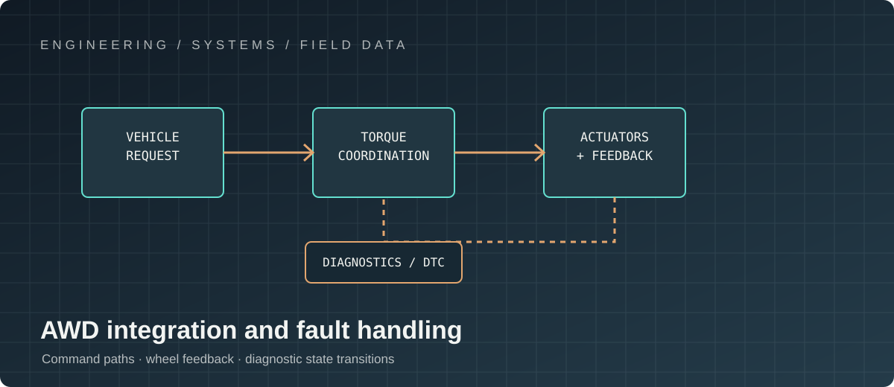

PROJECT 04 / AUTOMOTIVE
Special Operations Vehicle All-Wheel-Drive
Embedded control engineering for a demanding automotive application.
My contribution: control software in a vehicle context
I approach AWD firmware as a vehicle-level control problem, not an isolated torque algorithm. My focus is the interaction between driver demand, wheel-speed and vehicle-dynamics signals, torque allocation, actuator response and supervisory functions. I make command ownership, state transitions, diagnostics and fault reactions explicit so the implementation remains deterministic and explainable as traction conditions change.

My role: architecture, integration and validation
I frame the software architecture around clear control ownership, bounded execution paths, interface contracts and diagnosable mode transitions. I work across systems, controls, electrical/electronics, mechanical, test and vehicle integration concerns to ensure that torque requests, sensor feedback, actuator limits and vehicle-network behaviour agree at the boundaries.
My contribution is to expose the difficult cases early—split-traction surfaces, wheel-speed disagreement, stale or implausible signals, actuator saturation, communication loss and recovery—and turn them into explicit requirements and repeatable verification scenarios. Specific vehicle implementation details remain intentionally undisclosed.
TECHNICAL LEADERSHIP / VEHICLE CONTROL
Robust control under changing traction and operating conditions
An all-wheel-drive control stack has to reconcile driver demand, wheel-speed and vehicle-dynamics signals, driveline limits, actuator behaviour and degraded operating modes. The software architecture must make torque requests, arbitration, feedback and fault reactions deterministic and diagnosable.
Core expertise
- Control-system architecture spanning driver request, mode management, torque allocation and actuator commands.
- Torque distribution and traction-control strategies informed by wheel speed, slip, estimated vehicle state and driveline constraints.
- State machines for normal, low-traction, high-load and degraded modes, including explicit transition guards.
- Sensor plausibility, signal conditioning, timeout handling, stale-data detection and fault containment.
- Real-time task design, scheduling, inter-task communication and bounded command latency.
- Calibration architecture, parameter versioning, diagnostic observability and service-data strategy.
- Vehicle-network integration, interface definition and coordination with braking, powertrain and stability functions.
- Verification across nominal road, split-µ, transient traction, actuator limits, communication loss and recovery scenarios.
My technical leadership and integration contribution
I align controls, embedded software, electrical, mechanical, systems and validation teams around system-level requirements and ownership boundaries. I drive trade-offs between control performance, computational cost, fault tolerance and maintainability; establish integration gates; and use fault-injection and scenario-based evidence to expose cross-domain failure modes before release.
The visual on this page is a concept illustration of a Transit-style van platform; it is not a claim about a specific production vehicle or confidential implementation.